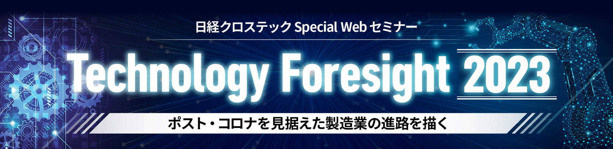
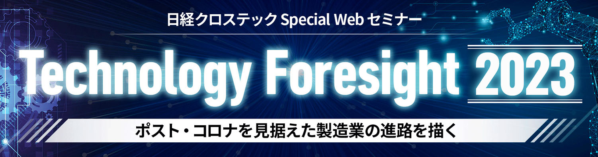

 
世界的に猛威を振るっている新型コロナウイルスは、製造業に深刻な被害をもたらしました。コロナ禍が終息しても、もはや製造業が元の姿に戻ることはないでしょう。
ものづくりの担い手にこれから求められるのは、様々な困難や変化に耐えられる、柔軟性と強靭さを兼ね備えた「レジリエント」な製造業です。そのためには、DX（デジタルトランスフォーメーション）の実現が欠かせません。製造業の今後の発展は、DXの戦略にかかっているといっても過言ではないでしょう。
「Technology Foresight 2023 ～ポスト・コロナを見据えた製造業の進路を描く～」は、技術や市場/トレンドの目利きを講師に迎え、ものづくり企業でDXの先導役を担う方々に向けて、DX戦略策定に役立つ情報を提供するオンラインセミナーです。
開催概要
- 名称
-
日経クロステック Special Webセミナー
Technology Foresight 2023
～ポスト・コロナを見据えた製造業の進路を描く～
- 日程
-
2023
年
3
月
15
日（水）～
12
月
31
日（日）
期間中の 17：00～18：00
に不定期で開催
※期間や時間は変更になる場合もございます
- 開催形式
- V-CUBEを使ったオンラインセミナー（Live配信）
- 主催
- 日経クロステック
- 協賛
-
- 日立ソリューションズ・クリエイト ほか
- 参加料
- 無料（事前登録制）
- 対象者
- 製造業の経営者、役員、および経営企画部門、調達・購買部門、人事・労務部門、研究・開発部門、設計・製造部門、物流部門、情報システム部門などのエンジニアやマネージャー
お問い合わせ
日経BP読者サービスセンターセミナー係
お問い合わせ